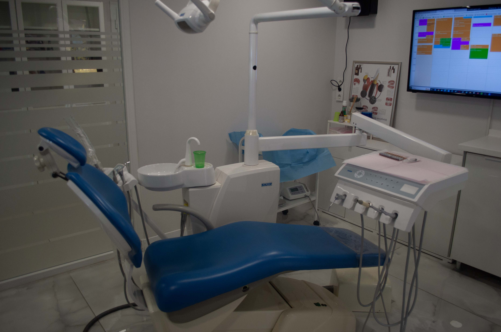
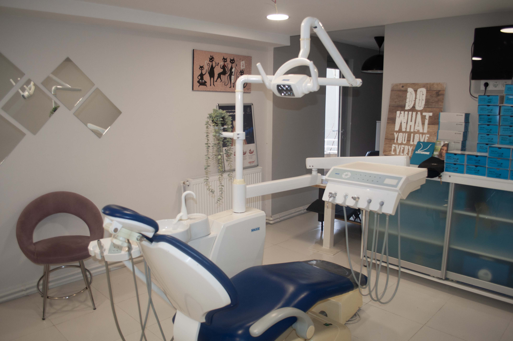
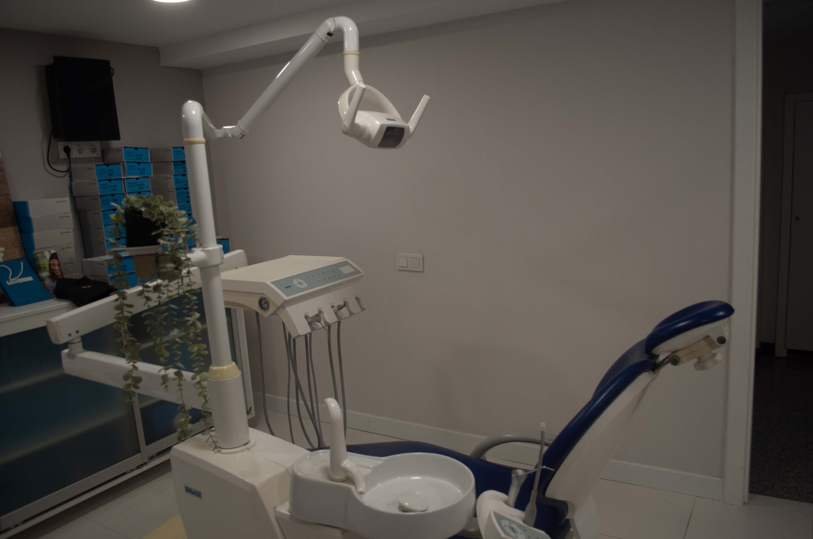
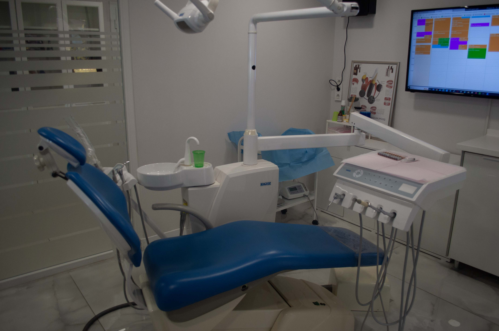
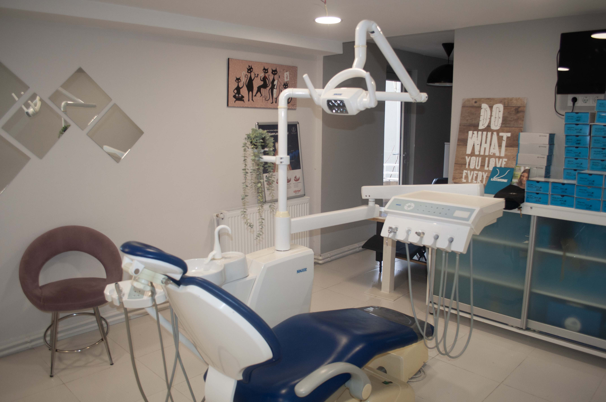
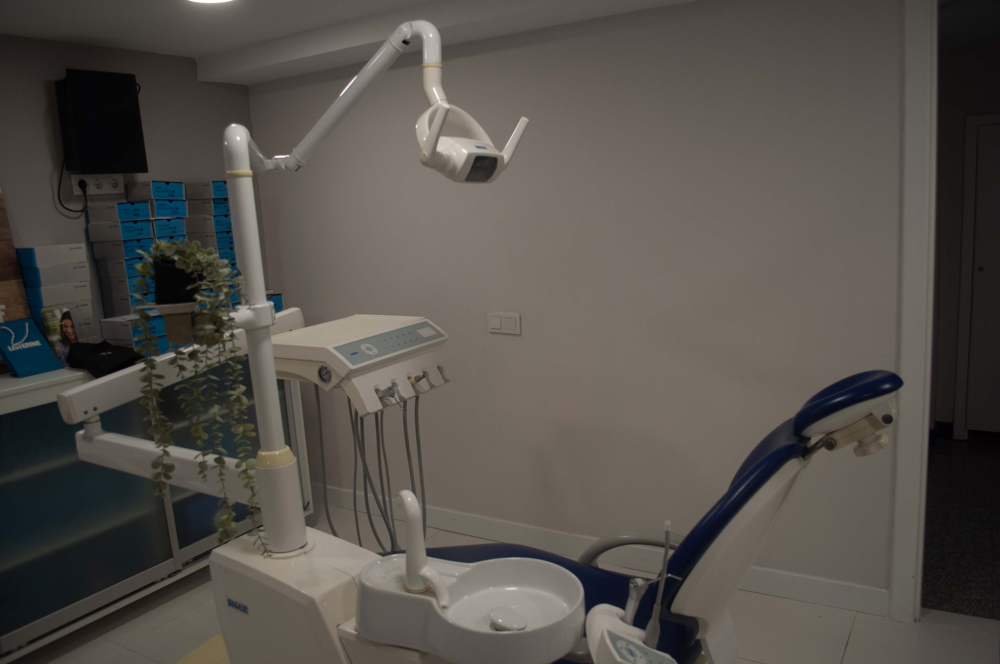
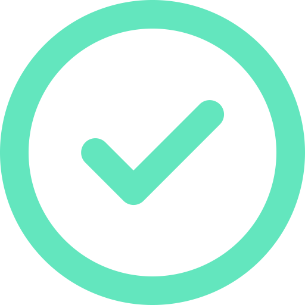
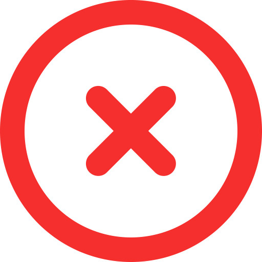

Medikal Hizmetlerimiz
Modern tıp teknolojileri ile tam donanımlı hastane, klinik ve muayenehanelerde güvenli bir sağlık hizmeti için buradayız.
Diş Estetiği - İmplant
Diş estetiği, diş etindeki çekilme ve asimetrik bozuklukları düzelterek, dişler ve diş etinin olması gerektiği standartlarda ulaşmasını sağlayan, yontulmuş, yıpranmış, renksiz, yanlış hizalanmış, kırılmış veya lekeli dişlerin düzenlenmesini sağlayarak size bir gülümseme makyajı sağlayan bir diş hekimliği uygulamasıdır.
İmplant, diş kaybının olduğu bölgelerde çene kemiği içerisine yerleştirilen diş kökünü taklit eden materyallerdir. Günümüz diş hekimliği uygulamalarında hastaların kaybettikleri estetik, fonksiyon ve fonasyonun tedavisinde öncelikli olarak implant destekli restorasyonlar kullanılmaktadırlar.
 





Saç Ekimi
Saç ekimi, saç kaybı yaşayan bireyler için kalıcı bir çözüm olarak kabul edilen cerrahi bir işlemdir. Saç ekimi genellikle androgenetik alopesi (erkek tipi kellik) veya diğer nedenlerden dolayı saç kaybı yaşayan kişilere uygulanır. Bu işlem, saç köklerinin alındığı donör bölgeden (genellikle arka baş ve yanlardaki alanlardan) alınan saç köklerinin, kellik yaşanan bölgelere (genellikle alın, şakaklar veya tepe bölgesi) nakledilmesini içerir.
Amaç; baş bölgesinde ekim yapıldığı belli olmayacak doğallıkta, kalıcı bir şekilde saçlı görünüm kazandırmaktır. Saç ekimi uygulaması ile kişiye kendi saçları hiç dökülmemiş gibi kalıcı olarak kazandırılmaktadır. Saç ekiminde amacımız; kişiye modern tıbbi uygulamalarla konforlu bir şekilde doğal saçlı görünümü tekrar sağlamaktır. Hangi yöntemin tercih edileceğine saç ve kafa deri analizi sonrası kişinin de öncelikleri göz önünde tutularak birlikte karar verilmektedir.
Talep ettiğiniz hizmet listede yer almıyor mu? Bize ulaşın ve bilgi alın!
Hizmet Paketlerimiz
Yolculuğunuzdaki bütün detayları düşünüyoruz, ihtiyaç ve isteklerinize göre seçenekler sunuyoruz.
Normal Paket |
Üst Paket |
Premium Paket |
|
|---|---|---|---|
| İşlem öncesi bilgilendirme- Talep ettiğiniz işlemle ilgili bilmeniz gereken herşeyi bu aşamada tarafınıza iletiyoruz. |  | ||
| İşlem için gerekli tüm destekler - Transfer: Sürecin başında ülkemize geldiğinizde sizi havaalanından
alma ve süreç bitiminde tekrar havaalanına bırakma, otele ulaşım ve otelden alım hizmeti - Otel: İşlem süreniz ve taleplerinize göre uygun bir otelde ağırlama |
|||
| Yapılacak işlem- saç ekimi, diş estetiği, implant, ... | |||
| İşlem sonrası gerekli tüm ilaçlar - İşlem tipine göre değişkenlik gösterir, daha fazla bilgi için iletişime geçiniz. | |||
| İşlem sonrası kontrol ve bakımlar- İşlem tipine göre değişkenlik gösterir, daha fazla bilgi için iletişime geçiniz. | |||
| İşlem sonrası bir yıl boyunca iletişim desteği *- İşlem sonrası sormak istediklerinizi uzman desteğiyle cevaplıyoruz. |  | ||
| Bir yıl boyunca gerekli durumda işlem, transfer ve konaklama hizmeti * - Bir yıl boyunca işlemle alakalı oluşabilecek yan etki(ler) ve/veya yaşanan zorluklar için tekrar ülkemize gelerek ek işlem yaptırma imkanı (bunu bir ek sigorta gibi de düşünebilirsiniz, sağlık sigortanızın yanı sıra, yaptırdığınız işlemden sonra kullanıma bağlı oluşan ve küçük bir ek işlem gerektiren durumlarda verilen ekstra hizmet) | |||
| Talebiniz üzerine ek destekler - Transfer, otel ve işlem ile ilgisi olmayan ama sizin için önem arzeden tüm hizmetler (kişisel ihtiyaç, kuaför, kozmetik hizmeti, alışveriş ihtiyacı, konsolosluk desteği gibi durumlarda yanınızda bulunma, vb.) | |||
| Üst pakette yer alan tüm hizmetleri daha üst seviyeye taşıyoruz: Örnekler: - Daha geniş ve daha konforlu havaalanı transfer aracı (isteğe göre özel bir araç veya marka) - Daha lüks otel (isteğe göre belli bir otel zinciri) - İsteğe göre bir cerrah veya diş hekimi (sosyal medyada rastladığınız ve hizmet almak istediğiniz kişiyle irtibata geçip size en özel fiyatı garanti ediyoruz) |
¹ transfer, otel ve işlem ile ilgisi olmayan ama sizin için önem arzeden tüm hizmetler (kişisel ihtiyaç, kuaför, kozmetik hizmeti, alışveriş ihtiyacı, konsolosluk desteği gibi durumlarda yanınızda bulunma, vb.)
² işlem tipine göre değişkenlik gösterir, daha fazla bilgi için iletişime geçiniz.
³ işlemden sonra profesyonel anlamda tüm kontroller yapılsa da, cilt hassasiyeti, ülkenizdeki hava şartları, yaşam koşullarınız, vb. Durumlardan dolayı, çok nadir de olsa yaşanabilecek her türlü sorunlarınıza bir yıl boyunca ücretsiz çözüm.
Kısaca
Süreç nasıl işliyor?
Tıbbi seyahat planınızdaki yapılması gereken bütün işlemlerin pürüzsüz bir şekilde halledilmesi için basit ve mantıklı bir yaklaşım ele alıyoruz. Güvenliğiniz ve rahatlığınız bizim için en az sağlığınız kadar önemlidir.
Adım 1
Tanı Koyulması
Adım 2
Hastane Uygunluğu
Adım 3
Tedavi Planlaması

Adım 4
Seyahat Organizasyonu